Hvordan høres en lydpuls i et lukket rum? Det kan være en kort lydpuls fx et knald fra en papirspose eller et pistolskud?
| Først høres den direkte lyd, dernæst høres den indirekte lyd, som er tilbagekastet lyd fra rummets vægge og endelig lyden, som er tilbagekastet mange gange fra væggene. Sidstnævnte lyd er efterklangen. | 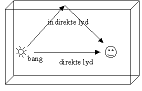 |
| Efterklangen afhænger af rummets størrelse og væggenes materiale. Jo større rum, jo længere tid går der mellem de enkelte refleksioner og derfor holder efterklangen længere. Jo bedre væggene er til at absorbere lyden, jo kortere varer efterklangen. Absorberer væggene 100%, kaldes rummet lyddødt og der er ingen efterklang. | 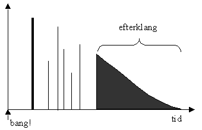 |
| Høres
en længerevarende lyd, fx en klavertone, vil man samtidigt høre den
direkte lyd og efterklangen. Er man tæt på lydgiveren er den direkte lyd
kraftigst. Er man længere væk er efterklangen kraftigst. I den kritiske
afstand er de to lydstyrker lige store.
Læg mærke til, at den direkte lyd aftager med afstanden, men at den indirekte lyd (efterklangen) er den samme i hele rummet. |
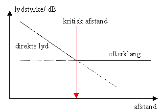 |
Lyd er trykbølger, jo kraftigere lyden er, jo mere energi transporteres der pr. tid gennem et bestemt areal. Lydintensiteten I er energitransporten pr. tid pr. areal gennem en flade, der er vinkelret på bølgens udbredelsesretning. Lydstyrken L defineres ved
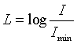
Lydstyrken er ubenævnt, men kaldes alligevel for bell (B). Ved 1000 Hz kan
det menneskelige øre lige netop opfatte intensiteten
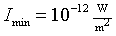
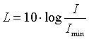
.
Efterklangen aftager eksponentielt. Betragt fx en lydbølge mellem to vægge. Ved hver tilbagekastning absorberer væggen brøkdelen a af energien. Efter en tilbagekastning er der brøkdelingen (1 - a) tilbage, og efter n tilbagekastninger er der brøkdelen (1 - a) n tilbage. Nedenfor ses grafen for funktion f(t) = 10000·(1 - 0,4)t .
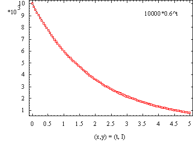 Almindelig graf |
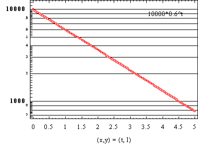 Semilogaritmisk graf |
Da Lydstyrken L beregnes som logaritmen til intensiteten I, aftager lydstyrken L(t) lineært.
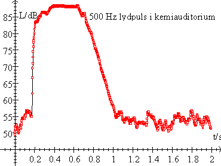
Herover ses et eksempel på en måling. En 500 Hz ren tone fra pc’en højttalere starter til tiden 0,2 sekund. Herved stiger Lydstyrken fra ca. 55 dB til ca. 90 dB. Når højttaleren slukkes, falder lydstyrken igen. Bemærk, at lydstyrken aftager lineært, som omtalt ovenfor. Baggrundsstøjen på ca. 55 dB skyldes ventilationsanlægget.
Efterklangstiden er den tid, som lydstyrken er om at aftage 60 dB, hvilket er ensbetydende med, at intensiteten aftager til en milliontedel! Det kan i praksis være vanskeligt, at opnå et fald på 60 dB, men efterklangstiden beregnes vha. grafens hældning.
Efterklangstiden kan også beregnes vha. Norris-Eyrings formel, som kan udledes således:
Antag, at rummet er kubisk med overfladen, S, og rumfanget, V, så vil den gennemsnitlige strækning, x, som lydbølgerne tilbagelægger mellem refleksioner være:
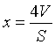
.
Faktoren 4 skyldes, at der i formlen midles over alle mulige indfaldsvinkler med væggene. (Prøv eventuelt, at udregne x for en kugle.)
Tiden mellem 2 sammenstød med væggene er:
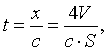
hvor c er lydbølgens hastighed.
Ved hvert sammenstød med væggene absorberes brøkdelen a af lydenergien. Efter n sammenstød er brøkdelen (1 - a)n tilbage. Det relative energitab er derfor:
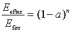
.
Og som funktion af tiden, t
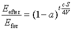
, idet der er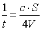
sammenstød pr sekund.
Efterklangstiden beregnes ved at løse ovenstående ligning med hensyn til tiden, t og benytte, at Energien er faldet med en faktor 106, når tiden T60 er gået.
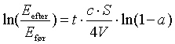
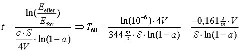
.
Lydhastigheden c = 344 m/s ved 20 °C og ln(1 - a) er negativ, da 0 < 1 - a < 1.
| 125 Hz | 250 Hz | 500 Hz | 1000 Hz | 2000 Hz | 4000 Hz | |
| Gips på træ | 0,14 | 0,10 | 0,06 | 0,05 | 0,04 | 0,03 |
| Tæppe på beton | 0,02 | 0,06 | 0,14 | 0,37 | 0,60 | 0,65 |
| Trægulv | 0,15 | 0,11 | 0,10 | 0,07 | 0,06 | 0,07 |
| Malet puds | 0,01 | 0,01 | 0,02 | 0,02 | 0,02 | 0,02 |
| Vægge ½” gipsplade | 0,29 | 0,10 | 0,05 | 0,04 | 0,07 | 0,09 |
| Termorude | 0,10 | 0,07 | 0,05 | 0,05 | 0,02 | 0,02 |
| Træpaneler | 0,30 | 0,25 | 0,20 | 0,17 | 0,15 | 0,10 |
| Gardiner, let foldede | 0,07 | 0,31 | 0,49 | 0,81 | 0,66 | 0,54 |
| Tavle, hård | 0,30 | 0,20 | 0,15 | 0,10 | 0.05 | 0.05 |
| Opslagstavle, porøs | 0,20 | 0,74 | 0,94 | 0,94 | 0,94 | 0,94 |
| Luft (pr m3) ved 20°C og 30% RF | - | - | - | - | 0,012 | 0,038 |
Af tabellen ses, at forskellige frekvenser har forskellige efterklangstider. Efterklangen ændres meget i et rum, når gardinerne tages ned! Samme volumen, men større overflade med stor absorption. Efterklangen ændres også, når rummet befolkes, og når folkene har udåndet vanddamp.
Efterklangstiden ved en given frekvens beregnes vha.
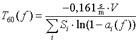
,
idet der summeres over alle overflader, hver med sin absorptionskoefficient.
Wallace Clement Sabine beregnede allerede efterklangstider i 1898. Sabines formel
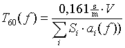
,
er en god tilnærmelse til Norris-Eyrings formel, idet ln(1 - a) » -a, når 1 - a er noget mindre end 1. Fejlen vil højst være 6% for a < 0,3.
Man bør huske på, at Norris-Eyrings formel også bygger på en række forudsætninger, som måske ikke er opfyldt. Rummet skulle være kubisk. Lyden skulle være diffus.
Eksempel: Et tomt rum: V = længde·bredde·højde = 8m·8m·3,3m » 210m3.
|
|
|
Si·ai(500 Hz) |
|
Loft: |
Gips på træ |
64m2*0,06 |
|
Gulv: |
Tæppe på beton |
64m2*0,14 |
|
Vægge |
Malet puds |
80,6m2*0,02 |
|
Termoruder |
25m2*0,05 |
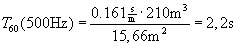
Til målingerne benyttes programmet Datalyse, Dataloggeren LabPro og et Sound Level Meter.
Ørets følsomhed er frekvensafhængig, derfor er en lydtryksmåler forsynet med filtre, hvis følsomhed varierer med frekvensen på samme måde, som det menneskelige øre.
A vægtning: den mest anvendte vægtning, benyttes fx i forbindelse med lovtekster. A-vægtningen afskærer den lavfrekvente støj.
B, C vægtning: er baseret på forsøg med rene toner, men de fleste lyde er ikke rene toner, så indtrykket passer ikke så godt med subjektive forsøg.
D vægtning: bruges til måling af flystøj.
Lyde kan variere hurtigere, end et instrument kan vise det, derfor arbejdes der med 3 forskellige tidskonstanter. Lydstyrken er en middelværdi i det valgte tidsrum.
Tidskontanterne er: Slow: 1 sekund, Fast: 125 ms og Impuls: 35 ms.
Ved måling af efterklangstider indstilles lydtryksmåleren til den hurtigste målemetode: Impuls og til C-vægtning, så der ikke afskæres ved lave frekvenser.
Signalet tages fra lydtryksmålerens DC-udgang, som giver en spænding der er proprotional med lydtrykket. 10 mV/dB.
LabPro indstilles fra Datalyse til scan med trigning og prestore. Kablet fra lydtryksmåleren tilsluttes kanel 1 på Labpro, og signalet måles som en spænding. Vælg fx 1000 målinger og sæt tid pr måling til 2 ms. Sæt trigning til stigende og trigværdi til 0,7 (volt) og prestore til 10%.
Verniers har en lydtryksmåler beregnet til CBL 2 og LabPro. Den kan tilsluttes uden problemer. Benytter du en anden lydtryksmåler, fx fra TES, må du selv lodde et kabel. Et British telecom-stik + jack-stik. Det er godt med et langt kabel, så afstanden mellem lydgiver og lydmåler kan være større end den kritiske afstand, se side 1.
Lyden kan laves med en hundeproppistol, men hundepropper kan kun købes til nytår!
Lyden kan også laves ved at starte endnu en version af Datalyse, vælge lydkort og tonegenerator og afspille en lydpuls. På denne måde kan man måle efterklangstider ved forskellige frekvenser, se tabel over absorptionskoefficienter.
Når data er overført til tabellen i Datalyse, ganges spændingsværdierne med 100 og en graf tegnes. Efterklangstiden bestemmes ud fra grafens hældning, som findes ved lineær regression.
Sammenlign efterklangstiden med en beregning vha. Sabines formel.
Hvis en afstand i rummet er et helt antal halve bølgelænger fås rumresonanser.
Stående bølger mellem 2 flader kaldes aksiale, fx mellem gulv og loft,
stående bølger mellem 4 flader kaldes tangentiale, fx mellem alle 4 vægge og
stående bølger mellem 6 flader kaldes skæve, dvs. mellem alle vægge og gulv og loft.
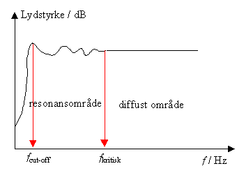
Figuren herover illustrerer situationen. Området med rumresonanser ligger mellem fcut-off og fkritisk.
Der kan ikke opstå resonanser i rummet, hvis alle afstande i det er mindre end ½ bølgelængde, hvilket er det samme som to gange den største afstand i rummet er mindre end bølgelængden. Derfor er fcut-off bestemt ved
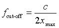
Der er ingen skarp grænse mellem resonansområdet og det diffuse område, men en tilnærmet værdi for den kritiske frekvens fås ved at antage, at det diffuse område dominerer, hvis den gennemsnitlige strækning, x, som lydbølgerne tilbagelægger mellem refleksioner er mindst 1,5 bølgelængde. Dvs.
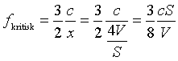
Det diffuse lydtryk er en sum af mange reflektioner fra mange retninger og derfor ens, men i resonansområdet med stående bølger, varierer lydtrykket som funktion af stedet. Det er derfor nødvendigt, at måle mange steder i rummet.